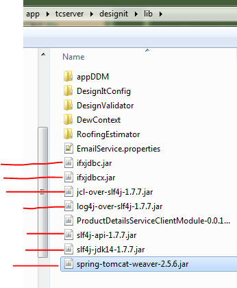
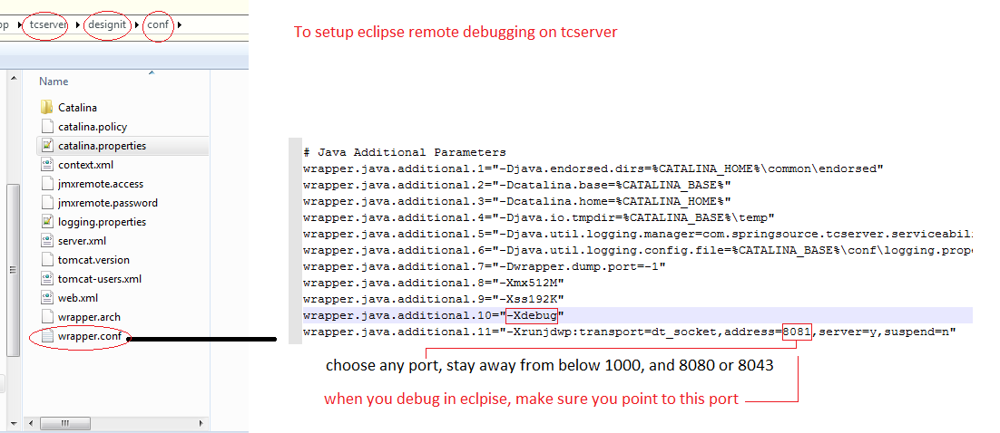
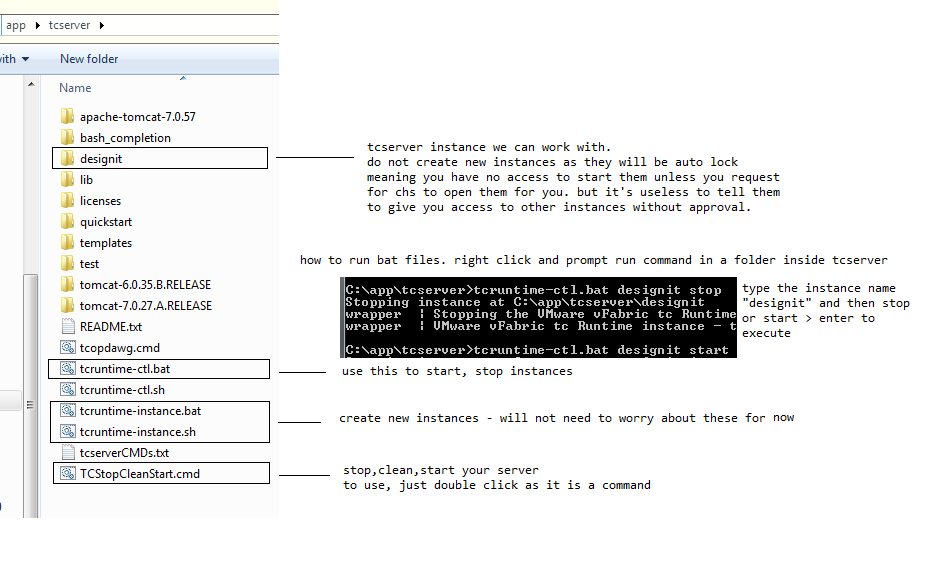
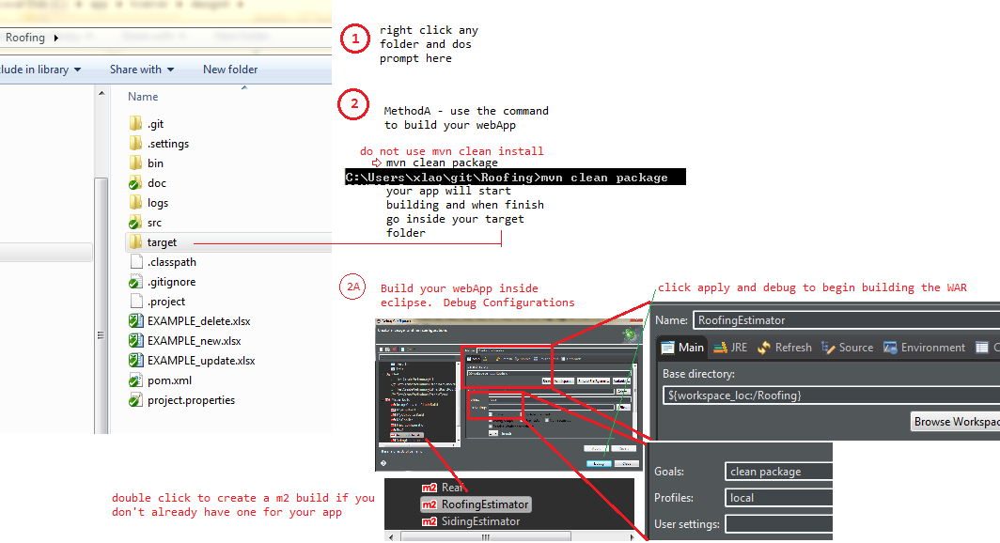
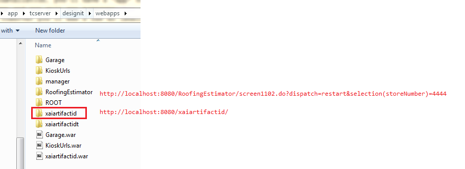

TC Server
TC Server is the new server from JBoss. TC stands for tom cat. Wade is the new framework to overwrite all our applications.
Intro to TC Server
What is a server?
A server is basically a computer machine like your personal PC.
True servers, however are built differently than your everday PC and have more processing power.
The purpose of a server, is to manage multiple PCs rather than 1 PC. For every one PC there is a User. If you are the only user
on your PC
running under one network, there is no need for a server. When you have a business that starts to have more than 1 PC and use the same network,
then you want to start thinking about using a server to manage multiple PC.
For example, in a business you have 100 computers and users. You want to control user access permission on confidential data on each department.
A server can help manage and give access to certain groups of users.
Or when running a website, a server can use load balancers to help distribute incoming visitors evenly on a site that uses multiple servers,
so that your site don't end up crashing when you have millions of visitors visiting your site on one server.
Installation
- Email desktop support to install you the following.
- You may not need to know what version to install.
CHS will pick it for you i believe, though you can specify which version.
- TcServer (TomCat Server)
- Apache
Installation 2 - manual checks
- To run roofing and siding correctly with products after initial installation
- The following jar files are needed to be in place in order to make successful SQL connections in Roofing/Siding

- ItemDisplayController com.informix.jdbc.IfxDriver log means you don't have the ifxjdbc jar above.
connection is trying to call a class which no jar files have.
Context file and properties are in place
- Context file usually located and named TOMCAT_ROOT/webapp/your-app-name/META-INF directory
- Context file should be copied over to tomcat server @ TOMCAT_ROOT_INSTANCE/conf/Catalina/localhost/your-app-name.xml
- For roofing its context is called RoofingEstimator.xml and SidingEstimator.xml for siding
- copy and paste the context file to C:\app\tcserver\designit\conf\Catalina\localhost\ here
- copy and paste appConfig.properties to the correct location. the environment.properties defines this path
- Also look at the tcserver log to see where the file should be located. create folders if necesary insdie designit instance
Additional Mod to context file
- Siding uses load-time-weaving AOP to log for SLA -- check to make sure you have below in context file
- therefore to use tomcat's loadtime weaving properly we need this in SidingEstimator.xml
-
<!-- needed for loadTime weaving -->
<Loader loaderClass="org.springframework.instrument.classloading.tomcat.TomcatInstrumentableClassLoader"/>
How to test if tcserver is installed and running
type in localhost:8080 to a browser url and it should take you to the green tcserver welcome page with congratulations!
More info
Creating a java webapp
To put your java webapp up on a server such as JBoss or TomCat, your app has to be created under a java webapp framework.
Chances are, you won't be creating web apps froms scratch, the web app is ready for you, you just have to build it and deploy it to tcserver.
Anyhow, Java Web apps can be built using multiple frameworks. One of the two common ones is ANT or SpringSourceTools. SpringSourceTools seems
more relavent to most web apps we use.
Instances
TCserver lets you create and run your own tcserver instances so that the main tcserver instance isn't affected in case of a problem.
By working with your own local instances, you have more control of which apps gets run on what server instances.
This also allows for each instances to have it's own setup configured differently to another instance.
at c: > app > tcserver > though not all folders are instances, all your instances will be located here as a folder. For example, "designit".
Usually you should be able to create an instance of tcserver, give it a name
then start the instance.
You can create your own instances and call it whatever, using the shell script but it is not advise
as menards locks down your access to any new instances.
Anyhow, as of 10/2015, designit is the only instance we can work with in tcserver.
Meaning all webapps' WAR files should be place inside this instance, as it's the only way to run the webapps properly.
When you start the instance using the start stop method above,
it is then, that you can hit your web app using the correct url at http://localhost:8080/wepAppFolderName/
debugging on tcserver using eclipse remote debug
by default, eclipse cannot remote debug tcserver without setting up a debug port. you need to do the following manually.
- wrapper.conf > add -Xdebug
- wrapper.conf > add -Xrunjdwp:transport=dt_socket,address=YOUR_PORT_CHOICE,server=y,suspend=n

- Then in eclipse, set your remote debugger to point to the new debug port you have just set up
Running and Stopping instances
- After installation, you'll have a "app" folder under C: drive
- Visit app and you will see tcserver
- Inside tcserver you'll see a few sh (shell), bat (batch), cmd (command) files
- You should see a designit folder, that is your instance
- 
- These are your tools to use in the command line to stop, start your tcserver and create, delete, update new tcserver instances
- Hint, don't try to create new instances, as we are locked down access to only designit
Deploying your webapp to your local tcserver instance and running it
- once you have pulled in all the packages into eclipse workspace you are ready to build your WAR file
- WAR file holds all the contents of your webapp combined, it is like a suitcase you then put it on tcserver
- This example we will using Roofing

- After build success, there are a few methods to get your war or wepApp root folder to the tcserver
- MethodA - copy and paste the war under your app > target > RoofingEstimator.war
- Paste it to c: > app > tcserver > designit > webapps
- stop and start your instance
- back in tcserver > desginit > webapps - the war file will have unzipped itself and crated a folder
- Inside the folder you will see a structure of 3 folders (META-INF, web, WEB-INF)
- This is the standard structure of a webapp in tcserver
- Now to run your app, you just have to know or figure out the correct url to hit the first page
- Usually for a basic web app, the first page can be hit by typing the app root folder

- for more setup webapp projects like Roofing, you'll need to call a start servlet (screen1102.do) and pass in get parameters after the ?
- You can even visit the kioskURL if you want to see examples or if you need shorcuts to hit local host for particular apps
- before starting the instance, you can change a folder to like xaiartifactidTEST, start the instance, and still browse to the app
- Just ensure you use the new correct url http://localhost:8080/xaiartifactidTEST/
- Keep in mind, if you have a war present, it will repopulate the folder if the folder is missing
Understanding how to run apache & tcserver pages (on your pc, tablet, remote pc, etc)
Keep in mind apache server and tcserver are two different things or servers. Apache is a web server, and tcserver is an application server.
Apache pages
- http://10.3.44.191/ = will take you to apache index.html landing page. This is your pc's default web hosting port
- When you don't append any other port, using http and calling your ip address takes you to your pc default web port
- http://ids-design-2189.menards.net/ = the same thing as using your ip
- Note: apache2.2 is installed in both the x86 and the c:app, but the real apache running is in the x86 so you can't modify even the it works page
When you target your ip address, it is running the apache index page in c:program x86/apache not your c:app/appache
More info
- apache's conf documentRoot sets the default landing page
- When you use localhost alone that is your ipaddress targeting apache pages
TC Server pages
- When you append the 8080, localhost:8080, that will now target your tcserver as your tcserver is set to port 8080
- http://localhost:8080/ takes you to your default tc frabricated server page, and it shows you that tc is up and working
- https://isids-4139-64b/Garage = tcserver
- When on tablets, you need to add the .menards.net to your computerName
- https://isids-4139-64b.menards.net/Garage/index.html - when you want to access remotely someone's local tcserver
- 10.44.333:8080/Garage/index.html - targeting a IP address with port will also get you to hit a tcserver or application server
- just as long as your local tcserver is set to run on port 8080
For more info how url address work, visit networking
If you want a clean refresh of your entire eclipse workspace use
- Open Command Prompt > cd /app/tcserver > TCStopCleanStart.cmd
- This will stop the server, perform maven clean, package build on workspace, copy new WAR to webapps folder, start TCServer
- TCStopCleanStart.cmd web -- will copy just the webapp folder to the server
Updating The Project When JSP or web changes only
If there are no java changes, you do not need to build the project in Eclipse.
If you made jsp, vm, or html changes in the eclipse workspace, you can use this below to copy over to the server without building
- Use command promtp > run tcserver (above) > TCStopCleanStart.cmd web
If you made web changes on the actual files on the server, you can just refresh the page, just make sure to copy the server files to the eclipse workspace when you are in your final stages.
Viewing Remote Server logs for Store purposes
Your local tcServer is just an instance for you. A store with issues will be logging to the actual remote menard webapp server.
And as you may know, there are two store servers we use nation wide to host roofing and siding and other webapps.
App 1 and App2.
To see the logs, you'll need to get access to these servers through a connection using
either filezilla/putty/winSCP and visit logs for details.